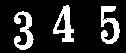

Examples
>>> f = mmbinary([
[0,0,0,0,0,0,0,0],
[0,0,1,1,1,1,0,0],
[0,0,1,1,1,1,1,0],
[0,1,0,1,1,1,0,0],
[1,1,0,0,0,0,0,0]])
>>> print mmopentransf( f, 'city-block')
processing r= 0 processing r= 1 processing r= 2 [[0 0 0 0 0 0 0 0] [0 0 1 2 2 2 0 0] [0 0 2 2 2 2 2 0] [0 1 0 2 2 2 0 0] [1 1 0 0 0 0 0 0]]
>>> print mmopentransf( f, 'linear-h')
processing r= 0 processing r= 1 processing r= 2 processing r= 3 [[0 0 0 0 0 0 0 0] [0 0 2 2 2 2 0 0] [0 0 3 3 3 3 3 0] [0 1 0 2 2 2 0 0] [2 2 0 0 0 0 0 0]]
>>> print mmopentransf( f, 'linear-45r')
processing r= 0 processing r= 1 processing r= 2 processing r= 3 processing r= 4 [[0 0 0 0 0 0 0 0] [0 0 1 4 1 2 0 0] [0 0 4 1 2 1 1 0] [0 4 0 2 1 1 0 0] [4 1 0 0 0 0 0 0]]
>>> print mmopentransf( f, 'user',10,mmsecross(),mmbinary([0,1,1]))
processing r= 0 processing r= 1 processing r= 2 processing r= 3 processing r= 4 [[0 0 0 0 0 0 0 0] [0 0 4 4 4 4 0 0] [0 0 5 5 5 5 5 0] [0 1 0 3 3 3 0 0] [2 2 0 0 0 0 0 0]]
>>> print mmopentransf( f, 'city-block-rec')
processing r= 0 processing r= 1 processing r= 2 [[0 0 0 0 0 0 0 0] [0 0 2 2 2 2 0 0] [0 0 2 2 2 2 2 0] [0 1 0 2 2 2 0 0] [1 1 0 0 0 0 0 0]]
>>> f=mmreadgray('numbers.tif')
>>> mmshow(f)
>>> g=mmopentransf(f,'OCTAGON')
processing r= 0 processing r= 1 processing r= 2 processing r= 3 processing r= 4
>>> mmshow(g)
|  | ||
| f | g |
{kind=link}
{kind=link}
The open transform stores all the openings by the disk with radii r
>>> b=mmsedisk(3,'2D','OCTAGON')
>>> g1=mmopen(f,b)
>>> mmshow(g1)
>>> g2=mmcmp(g,'>',3)
>>> print mmis(g1,'==',g2)
1.0
| g1 |
{kind=link}